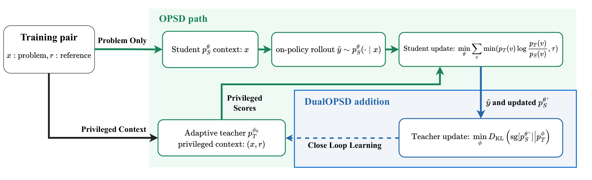
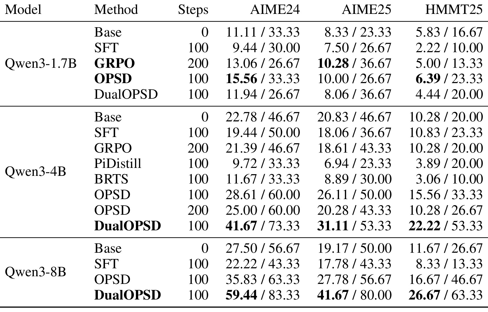
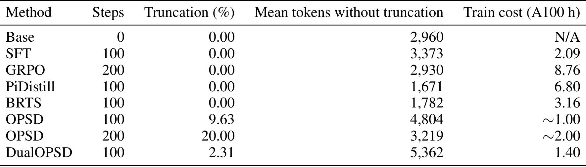
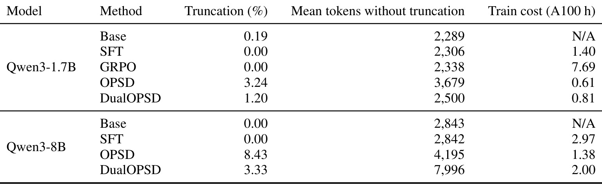
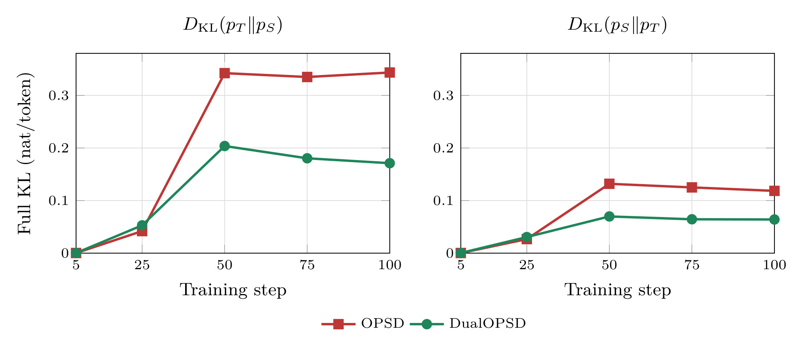
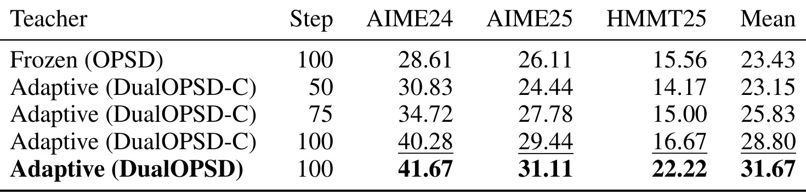

DualOPSD：面向在线策略自蒸馏的自适应特权教师
DualOPSD 讨论的是大模型数学推理后训练中一个容易被忽略的角色分工：当学生模型沿自己采样出的轨迹学习时，使用参考解答作为特权上下文的“教师视图”是否也应该改变。论文由克莱姆森大学 Yutong Chen、Guangfu Guo、Kunpeng Liu 与犹他大学 Zhichao Xu 合作完成，于 2026 年 8 月 26 日公开于 arXiv:2608.26019。本轮未核验到独立的 DualOPSD 官方代码或项目仓库，因此复现细节以论文中的提示词、超参数和附录为准。
现有在线策略自蒸馏会在学生分布与输出风格不断变化时仍固定特权教师；裁剪只能在当前步拒绝不兼容信号，却无法让教师根据学习者的变化作出调整。
1. 背景和问题
提升数学推理能力的后训练方法，通常在三种信号之间做取舍。监督微调直接使用高质量解答的 token 级标签，信号密集、优化稳定，但训练前缀来自专家轨迹，而部署时模型必须面对自己已经写出的前缀，因此存在状态分布不一致。带可验证奖励的强化学习相反，它在当前策略上采样，最终答案验证器给出序列级回报，但一道题往往需要多条长 rollout，而且同组样本奖励相同时优化信号会很弱。在线策略蒸馏尝试同时取得两者的优点：学生在自己采样出的前缀上运行，教师对每一个下一 token 分布给出密集监督。
这三类方法的核心差异不只在损失函数，还在“由谁决定训练时看到的状态”。SFT 由专家轨迹决定前缀，因而教师信号再准确，也未必覆盖模型自己推理时的错误状态。RLVR 由学生当前策略决定前缀，却要把长轨迹压缩成最终对错奖励，很难告诉模型哪个中间 token 开始偏离。OPD 将学生前缀与教师的密集分布监督结合，所以它的吸引力来自一个很具体的信号组合：状态是在线策略的，监督却是 token 级的。这也说明为什么教师的设定不是旁枝，而是决定信号是否会随状态分布一起老化的主问题。
问题在于，传统在线策略蒸馏仍需要一个外部教师。OPSD 进一步把学生和教师建在同一基础大模型上：学生只看问题，特权教师同时看到问题与已验证的参考推理轨迹。学生先采样一条回答，两个视图再在同样的学生前缀上打分。这样，参考解答不是被直接强迫仿写，而是作为只在训练时可见的条件，为学生当前已访问状态上的全词表分布提供更细的引导。推理时既不需要参考解，也不保留教师视图。
“特权”在这里并不意味着教师可以在推理时偷看答案，而是一种训练期的条件非对称。学生必须保持可部署性，所以输入只有问题；教师则用参考解答来理解一条学生前缀后哪些下一 token 更合理。因为两者来自同一基座，教师的优势主要来自上下文信息，而不是参数量或预训练质量上的绝对压制。这个区别很重要：对一个外部强教师而言，保持固定可能是稳定锚点；对同模型的特权视图而言，完全固定却可能意味着它不理解学生已发生的分布迁移。
但 OPSD 把特权教师当作静态神谕，这个假设并不自然。教师并非独立训练的更强模型，它只是同一个基座在额外参考上下文下的条件分布。随着学生更新，学生前缀的分布、解题组织方式和格式 token 都会改变；固定教师却可能每次都输出同一类与学生风格冲突的高概率项。OPSD 对每个词表项的较大正贡献做上界裁剪，能保护学生不被少数格式与风格差异主导，可被裁掉的信号不会回流给教师。因此，裁剪是当步的拒绝机制，不是长期的教师校准机制。
这里还有一个与“教师太弱”不同的失败模式。教师可能在数学内容上利用了参考解，却在表达习惯上与学生差异很大。前向 KL 对教师高概率、学生低概率的项特别敏感，于是少数换行、标点、格式或固定句式就可以占据梯度。学生侧裁剪的确能止损，但如果教师不从被裁剪的项中学到“我的表达与当前学习者不兼容”，同类冲突会在后续每一步重现。DualOPSD 要修复的正是这个“不能积累反馈”的结构性问题，而不是否定特权参考的信息价值。
DualOPSD 提出的核心研究问题便是：特权教学策略是否应当作为在线策略自蒸馏的一部分一起学习？这不是要把两个模型变成对等同伴。参考解答仍只对教师可见，学生仍需从特权信号获得内容引导；但当学生通过裁剪表明某些词表级信号与其当前状态不兼容时，教师应该有一条学习通道来吸收这个反馈。论文的关键创新是把这条通道放在同一条学生轨迹上，避免再采样一条教师轨迹。
2. 方法
2.1 从固定特权教师到闭环适应
先从标准知识蒸馏的逐 token 目标开始。对给定轨迹 (y)，教师和学生在每个前缀上匹配下一 token 分布。这个起点决定了后续“适应”发生在哪里：DualOPSD 没有改成只看最终答案奖励，也没有让教师另写一条解题轨迹，而是继续在学生已经访问的每个前缀上比较完整词表分布。因此，闭环更新仍保留在线蒸馏的密集监督，只改变产生监督目标的教师是否随学生状态演化：
符号解释：(x) 是问题，(y) 是用于评估蒸馏损失的序列，(y_{<n}) 是第 (n) 个位置之前的前缀，(p_T) 与 (p_S) 分别是教师和学生分布，(D_{\mathrm{KL}}) 是 KL 散度。如果 (y) 是固定参考轨迹，该目标仍然是离线的；OPD/OPSD 的差别是让 (hat y\sim p_S(\cdot\mid x))，从而在学生真正会访问的前缀上提供密集监督。进入在线策略自蒸馏后，特权教师与学生对同一个学生前缀打分；为了定位少数异常风格 token 对梯度的支配，论文进一步把位置 (n) 的前向 KL 拆成每个词表项的贡献：
符号解释：V 是完整词表，v 是某个候选 token，c(n,v) 是它对第 n 个位置前向 KL 的有符号贡献。总和非负，但单个 c(n,v) 可以为负，因此下一步的点式裁剪之和已不是数学上的散度。OPSD 发现，少数格式或风格相关 token 可能对前向 KL 产生异常大的正贡献，使学生用大量梯度去追逐与数学内容无关的表面差异。
符号解释：τ 是每个有符号词表贡献的上界，带波浪号的 KL 量是裁剪后的代理量，而非严格的 KL。这个裁剪保护的是学生，却没有修改教师。如果某个风格项在今天的学生前缀上被拒绝，冻结教师明天仍会提供同样的高差异信号；也就是说，裁剪只降低一次不兼容监督对学生更新的影响，没有把“学生为何持续拒绝该监督”的信息写回教师。用 θ_k 和 φ_k 表示第 k 步的学生和教师参数时，固定教师 OPSD 因而始终调用初始教师 φ_0：
符号解释：η_S 是学生学习率，∇_θ 只对学生参数求导，L_S 是在当步学生轨迹上计算的裁剪蒸馏损失。无论学生已经走到什么分布，目标一直是 φ_0 的特权条件分布，这就是开环；当学生能力、生成风格与常见前缀持续变化时，教师无法利用这些变化修正下一轮监督，裁剪阈值只能反复处理相同冲突。DualOPSD 把第二个更新接回第一个更新之后：
符号解释：η_T 是教师学习率，L_T 是以更新后学生 θ_(k+1) 为目标的教师损失。两个损失都使用同一条 ŷ_k，但顺序不能交换：学生先从当前特权教师学习，然后教师才追向更新后的学生。新的 φ_(k+1) 不会追溯改变当前已完成的学生梯度，而是改变后续步骤的特权目标。

Figure 1 把“同一条轨迹、两个不对称更新”表达得很清楚。绿色路径是原 OPSD：训练对中的问题 x 交给学生，学生采样 ŷ；问题与参考 r 交给特权教师，教师只对学生前缀给出分布分数，学生用裁剪的前向 KL 更新。蓝色路径是新增的回路：不采样第二条文本，而是对同一个 token 序列重算更新后学生分布，用完整反向 KL 更新教师。图中虚线回到特权教师，强调这个改动影响的是以后的监督，不是当步中同时对称地将两个分布拉到中间。因此“闭环”并不意味着角色消失：教师始终可见特权参考，学生始终只看问题，推理时也始终只部署学生。
从优化视角看，图中“updated student”通向教师的箭头是整个方法最不能被省略的先后依赖。若教师追随的是更新前学生，它只能看到学生旧分布，当步裁剪所体现的不兼容性还没有进入目标。若为教师重新采样，又会把闭环的成本优势换成一次新的长文本生成。DualOPSD 所选的中间路径是保留轨迹 token，却重算更新后学生的分布。这也给复现者一个明确的断言点：只有新的学生 logits 应被 stop-gradient 后当作教师目标，学生已经采样的离散序列则不重新生成。
2.2 非对称交替更新
真正区分 DualOPSD 与普通互学习的，是两个损失并不对称。学生仍需要保守，因为特权教师的内容优势可能夹带与学生不兼容的风格峰值；教师则需要看到学生的完整分布反馈，否则被学生裁掉的那一部分仍然没有途径返回教师。这种非对称性还维持了角色分工：学生更新优先吸收特权内容，教师更新只校准未来应怎样表达这些内容，而不是让两个模型无条件折中到同一个分布。学生损失是：
符号解释：(x,r) 是问题和参考解组成的训练对，ŷ 是从当前学生采样的轨迹，p_S(n) 和 p_T(n) 是两个模型在第 n 位的全词表分布，sg 表示 stop-gradient，τ 是有符号词表项的上界。教师在这一步只提供目标，梯度不经过教师分布；裁剪在对 v 求和之前完成，所以它不是“对最终 KL 数值做截断”。学生更新得到 θ+ 后，算法保留同一批 ŷ 的 token 与 mask，只重新计算更新后学生 logits，再把这一新分布作为教师目标：
符号解释：θ+ 是已完成式 (6) 更新的学生，φ 是当前教师，反向 KL 中被 stop-gradient 的学生是目标，梯度只经过特权教师 logits。教师的词表贡献不被裁剪，因而学生在前一步压制的风格差异会成为教师本步的学习信号。学生被特权信号教导，教师则被学生当前可接受的输出分布校准，两者不是对称共识。论文用 DualOPSD-C 进一步检验“教师也是否应裁剪”，为此先将反向 KL 拆成单个词表项：
符号解释：(d_{n,v}) 是更新后学生相对教师在位置 (n)、词表项 (v) 上的有符号反向 KL 贡献，学生一侧仍然停止梯度。这个分解让消融精确作用于教师看到的词表级反馈，而不改变轨迹、更新顺序或特权输入；因此 DualOPSD-C 与完整方法的差异可以归因于教师是否接收完整分布误差信号。DualOPSD-C 把这些项用下界裁剪后再求和：
符号解释：L_T^C 是教师裁剪消融目标，max(d(n,v),τ) 会去掉低于阈值的梯度贡献。因为 d(n,v) 同样有符号，式 (9) 也不是散度。它与式 (7) 的实验差值回答了一个很具体的问题：教师适应并非只是多做一次优化，让教师看到学生完整分布才是设计中的重要部分。
2.3 双 LoRA 实现与训练/推理边界
实现上，学生和教师是同一个冻结 Qwen3 基座上的两个 LoRA adapter。它们从同一个基础策略 LoRA 状态起步，但参数与 AdamW 优化器状态分开，任一时刻只激活一个 adapter。每个优化步先对批量中每道题采样一条最长 1,024 token 的学生回答；在这些 token ID 和 mask 上计算式 (6)、更新学生；然后关闭学生梯度重算 logits，切换到教师 adapter，用特权提示词计算式 (7) 并更新教师。全词表打分按 1,024 token 分段，不同模型尺度只改变微批和内存调度，有效批量与目标保持一致。
这个工程实现中有两个容易被口号掩盖的成本点。第一，DualOPSD 的确没有再生成一条教师轨迹，这使它不需要像 PiDistill 或 BRTS 那样为每题采样多个特权候选。第二，复用 token 轨迹并不等于复用所有计算：更新后学生要重算，教师还需要一次特权前向与反向。因此它优化的是 rollout 数量和长文本生成费用，不是把第二个 adapter 的训练成本消除。
训练与推理的边界同样明确：采样操作不在梯度图中，特权参考只服务于训练时的教师条件分布，推理只使用学生 adapter。这使 DualOPSD 在部署侧不比原 OPSD 多一个模型，但训练侧要同时维护两份 LoRA 参数和优化器状态。复现时还必须保证学生先更新、更新后 logits 重算、教师后更新的顺序；若两个损失并行使用更新前学生，就已不是论文的闭环目标。
3. 实验结果
3.1 数据、基线与评估口径
训练数据来自 OpenThoughts OPSD split，共 29,434 道数学问题及解答。作者选择 Qwen3-1.7B、Qwen3-4B 和 Qwen3-8B，全部使用非思考模式；同一尺度内的所有方法都从同一基础 checkpoint 出发。OPSD 与 DualOPSD 使用批量 32、100 个优化步，学生 rollout 上限 1,024 token，采样温度 1.0、top-p 0.95、top-k 20。两个 LoRA 的 rank 为 64、scale 为 128、dropout 为 0，覆盖注意力 q/k/v/o 投影和 MLP 的 gate/up/down 投影。学习率为 (5\times10^{-6})，预热 10 步，梯度范数裁剪为 0.1，数据不打乱，训练 seed 为 42。
基线覆盖三种不同后训练范式：SFT 对参考解答训练 100 步；GRPO 训练 200 步，每道题 8 条最长 8,192 token 的生成，并由二值数学验证器给奖励；蒸馏基线包括 100/200 步固定教师 OPSD，以及论文实现的 PiDistill 和 BRTS。后两者为每题采样 4 条特权候选：PiDistill 根据有效性与学生兼容性更新教师，BRTS 在通过有效性门的候选中选择平均 token 差距最小的一条。它们是本文定义的比较变体，不应被误读为拥有完全对等预训练资源的外部成熟系统。
评估包括 AIME 2024、AIME 2025 和 HMMT 2025 二月赛，每个基准 30 题，每题采样 12 次。解码同样使用非思考模式和温度 1.0，最长长度是 32,768 减去提示词 token 数。主指标 avg@12 是 12 个回答的平均正确率，pass@12 表示一道问题的 12 次中是否至少有一次正确；此外还报告截断率与非截断样本的平均长度。答案优先取最后一个完整的 boxed 表达式，使用 math_verify，解析失败时再回退到项目验证器。
3.2 主结果：尺度互作
最重要的结果不是“DualOPSD 一定优于 OPSD”，而是教师适应和模型尺度存在很强的互作。与 100 步 OPSD 比较，1.7B 上 DualOPSD 在 AIME24、AIME25、HMMT25 的 avg@12 分别下降 3.61、1.94、1.94 个百分点；4B 分别上升 13.06、5.00、6.67 个百分点；8B 则上升 23.61、13.89、10.00 个百分点。受益从 4B 到 8B 扩大，却在 1.7B 完全反向，这个结果直接排除了与容量无关的普遍改善。

Table 1 需要同时沿“尺度”和“指标”两个方向读。1.7B 中，DualOPSD 的三项 avg@12 是 11.94、8.06、4.44，都低于 OPSD 的 15.56、10.00、6.39；AIME25 的 pass@12 虽然从 26.67 到 36.67，但 avg@12 仍下降，说明“至少一次命中”与“平均样本更可靠”不能混为一谈。4B 的 DualOPSD 在三个数据集上同时取得最高 avg@12，其中 AIME24 为 41.67，对比 OPSD 100 步的 28.61；把 OPSD 增到 200 步反而降到 25.00，因此收益不是单纯多做学生步数。8B 的 AIME24 avg@12/pass@12 从 35.83/63.33 提高到 59.44/83.33，是头条数字，但它只能与同尺度、同设置的基线相比，不能外推成对所有模型尺度都有近 24 点提升。
作者还比较了 8B 与 1.7B 相对 Base 收益的成对差，三个基准分别为 31.11、22.78、16.39 个百分点，成对 bootstrap 95% 置信区间分别是 [20.00, 42.22]、[12.78, 33.61]、[6.39, 27.22]，均不包含 0。这支持“规模效应是真实实验现象”，但不能替代多 seed 重复：每个基准只有 30 题，同一训练 seed 与相同 90 道题会限制这个置信区间能回答的问题范围。
3.3 截断、长度与成本
在 4B 上，DualOPSD 的汇总截断率从 OPSD 100 步的 9.63% 降至 2.31%，但非截断样本平均长度从 4,804 增至 5,362 token。这意味着截断下降并不是因为模型变得更早停止；在此尺度上，它反而生成更长的完整回答。同时，单 A100 训练墙钟从 OPSD 约 1.00 小时增至 1.40 小时。

Table 2 让“无额外 rollout”的工程含义可以被准确阅读。DualOPSD 与 OPSD 100 步的学生步数和采样轨迹数相同，但前者仍要额外做教师前向和反向，所以墙钟增加约 40%。它依然显著低于 PiDistill 的 6.80 A100 小时和 BRTS 的 3.16 小时，这两个变体每题要采样 4 条特权候选；但也不能忽略该表只报告特定实现在一张 A100 上的总墙钟，其中包含采样、打分、验证器执行、checkpoint I/O 与系统开销，并非硬件无关的 FLOPs 比较。表中 SFT 和 GRPO 截断均为 0，也表明低截断本身不保证更高准确率。
附录表 4 把同一口径扩展到 1.7B 和 8B。1.7B 上，OPSD 到 DualOPSD 的截断率从 3.24% 降至 1.20%，但非截断平均长度从 3,679 降至 2,500，准确率也下降；8B 上，截断从 8.43% 降至 3.33%，平均长度从 4,195 升至 7,996，准确率则显著上升。

Table 4 的价值在于排除一条过于简单的解释链：DualOPSD 并不是通过普遍缩短或延长回答来降低截断，更不是“截断降低所以准确率一定上升”。三个尺度的截断都改善，只有 4B 和 8B 的准确率上升；1.7B 在长度变短的同时反而变差。成本也呈现规模相关的绝对增量：1.7B 从 0.61 到 0.81 A100 小时，8B 从 1.38 到 2.00 小时。对实际训练系统而言，这组数字支持“复用学生轨迹比多候选特权采样便宜”，却也要求在采线时对额外教师反向的显存、吞吐与墙钟进行独立预算。
进一步看，8B 的非截断平均长度几乎翻倍，与 avg@12 提升同时发生，但表格没有报告每道题的长度-正确性条件分布。因此，当前只能说更长的完整回答与改善并存，不能说长度增加导致了改善。若要追踪机制，需要按答案正确性、是否截断和题型分组报告长度，并检查教师适应是否降低了无效循环或改变了终止格式。
3.4 教师与学生的适应动力学
为验证教师的确“跟上”学生，作者对 4B 的步数 5、25、50、75、100 checkpoint 重算两个方向的全词表 KL。诊断每次都使用相同的 8 个 OpenThoughts 样本、相同问题上下文与固定参考完成，每条最多 512 token，共享 3,983 个有效 token，以 FP32、温度 1 计算。重要的口径是，这个诊断中两个 adapter 看到相同的问题上下文和固定前缀，不等同于训练时教师能看参考解的特权条件目标。

Figure 2 的左图是教师到学生的前向 KL。OPSD 在步数 50 左右上升到 0.342，之后大致留在 0.34；DualOPSD 在步数 50 约为 0.20，到步数 100 降至 0.171，比 OPSD 低 50.2%。右图的学生到教师反向 KL 在步数 100 为 0.064，比 OPSD 低 45.9%。这说明式 (7) 确实使教师对学生的当前分布作出了参数响应，而不是只因学生单方面靠近一个固定目标。但低 KL 是教师损失直接优化的量，所以它首先是机制有效性检查，不能独立当成推理能力的证明。步数 100 时前向 KL 的中位数只有 0.00185，平均值却是 0.171，表明少数长尾 token 位置支配了均值；如果不检查分位数和这些位置的语义，“平均 KL 减半”仍可能被少数格式点位放大。
3.5 教师目标消融
DualOPSD-C 保持学生上界裁剪不变，只把教师的完整反向 KL 改为式 (9) 的下界裁剪。因此，冻结 OPSD 与 DualOPSD-C 的差值衡量“教师会不会学”，DualOPSD-C 与完整 DualOPSD 的差值则更接近“教师是否应接收全部学生分布信号”。

Table 3 中，冻结教师 OPSD 在 4B 的三基准平均 avg@12 为 23.43。DualOPSD-C 在 50 步是 23.15，75 步升到 25.83，100 步达到 28.80，比冻结教师高 5.37 个百分点。这条 checkpoint 趋势说明，即使教师信号也被裁剪，让教师随学生更新仍然能超过固定目标，且不是用更多学生步数换来。完整反向 KL 的 DualOPSD 在 100 步的平均值为 31.67，又比 DualOPSD-C 高 2.87 点；分基准看，AIME24、AIME25、HMMT25 分别再提升 1.39、1.67、5.56 点，HMMT25 对教师完整信号最敏感。作者另外报告，一次不对学生做裁剪的早期运行在 MATH-500 只有 2.0%、两个 AIME 都是 0%；因当时使用 8k 长度上限，这一结果不能与主表直接定量比较，但它支持非对称的定性动机：学生需要保守接收，教师需要完整接收学习者反馈。
4. 总结
4.1 我的判断
DualOPSD 的贡献不在于又换一个蒸馏散度，而在于重新定义了特权教师的责任。参考解带来的信息优势仍被保留，但教师不再是一个完全静止的目标；学生通过裁剪被保护，教师通过完整反向 KL 理解学生当前能表达的分布。同轨迹的交替更新避免了额外教师生成，对长推理回答尤其有价值。但实验最有意义的警告同样清楚：它在 1.7B 上失败，所以不存在一个能跨尺度直接复用的普遍收益承诺。
对大模型后训练实践，这篇论文提供了一个可迁移的设计准则：当监督信号依赖额外上下文，而被监督策略持续改变时，只在学生侧拒绝异常梯度可能不够，还要问监督者能否吸收这个拒绝信号。这一思路可用于个性化助手、检索增强教师、含私有用户上下文的训练视图，但要求特权信息只在训练时使用且不被学生直接记忆泄漏。对推荐系统，类似机制可以设想为用只在训练中可见的长期反馈、延迟转化或更完整用户序列建立特权教师，再让教师回应当前排序模型的可学分布；然而线上价值、曝光偏差与隐私必须单独验证，本文的数学实验并未提供这些证据。
4.2 局限与后续跟进
局限至少有五点。第一，只覆盖 Qwen3 一个模型家族，1.7B 的反向结果表明容量、表达能力或教师可适应性可能存在阈值。第二，只有一个训练 seed，评估也只有三个数学竞赛集合共 90 题，8B 的大幅增益需要多 seed、更广题型和答案人工审核复核。第三，双向 KL 诊断只在 4B 的 8 个固定样本上进行，且该诊断正是教师目标优化的量；它能证明耦合改变，不能证明教师持续有效利用参考解的内容。第四，复用学生轨迹仍增加教师前后向，1.7B/4B/8B 的墙钟均上升，且报告成本只来自一张 A100 的特定实现。第五，本轮未核验到官方代码，学生/教师 adapter 切换、logits 重算、分段梯度累积和验证器回退的工程细节暂时无法从实现交叉核验。
后续值得优先跟进四件事。其一，在 1.7B、4B、8B 上各做至少三个 seed，并将尺度换成不同模型家族，用来判断反转是容量阈值还是 Qwen3 非思考模式的特例。其二，把双向 KL 拆到格式 token、数学符号、自然语言推理和答案邻近位置，同时报告均值、中位数与高分位数，找出式 (7) 究竟在校准风格还是改变内容分布。其三，设置教师学习率、更新频率、指数滑动平均或保留特权参考的正则化消融，检查小模型是否因教师过快追随而丧失教学优势。其四，等待或促进官方代码与多卡实现公开，再对比相同完成 token 数、相同墙钟和相同 GPU 小时三种预算口径，避免用“相同学生步数”掩盖实际计算差异。
综合而言，DualOPSD 是一个机制动机清晰、成本边界相对透明的自蒸馏改进，其 4B/8B 结果值得复现，而 1.7B 反例使这项工作比单纯报告正向结果更有研究价值。当前最合理的结论是：自适应特权教师可以改善中大尺度 Qwen3 非思考模式的竞赛数学后训练，但效果对尺度敏感，尚未被证明能跨模型家族、任务和种子稳定复现。